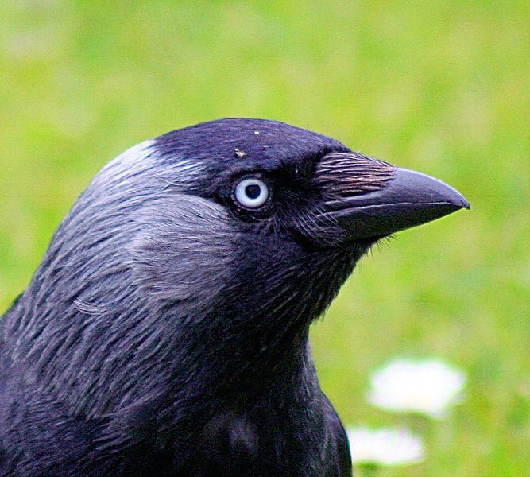
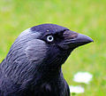

File:Jackdaw - up close and personal (552502080).jpg
From Wikipedia, the free encyclopedia

{kind=link}
Size of this preview: 667 × 600 pixels. Other resolutions: 267 × 240 pixels | 534 × 480 pixels | 854 × 768 pixels.
{kind=link}
{kind=link}
{kind=link}
{kind=link}
Full resolution (1,091 × 981 pixels, file size: 260 KB, MIME type: image/jpeg)
|
|
This is a file from the Wikimedia Commons. Information from its description page there is shown below. Commons is a freely licensed media file repository. You can help. |
| Description | A close up portrait of one of the many jackdaws that visit my garden and steal food from the sparrows and blackbirds. (Eurasian Jackdaw, Corvus monedula, |
| Date | , 11:40 |
| Source | Jackdaw - up close and personal |
| Author | John Haslam from Dornoch, Scotland |
|
Camera location |
|
This and other images at their locations on: Google Maps - Google Earth - OpenStreetMap | (Info) |
|---|
.jpg¶ms=57.881345_N_-4.022868_E_type:camera_&language=en){kind=link}
[edit] Licensing
.jpg&action=edit§ion=1){kind=link}
| This file is licensed under the Creative Commons Attribution 2.0 Generic license. | ||
|
| This image, originally posted to Flickr, was reviewed on February 10, 2008 by the administrator or reviewer File Upload Bot (Magnus Manske), who confirmed that it was available on Flickr under the stated license on that date. |
File history
Click on a date/time to view the file as it appeared at that time.
| Date/Time | Thumbnail | Dimensions | User | Comment | |
|---|---|---|---|---|---|
| current | 10:40, 10 February 2008 |  | 1,091 × 981 (260 KB) | File Upload Bot (Magnus Manske) | {{Information |Description= A close up portrait of one of the many jackdaws that visit my garden and steal food from the sparrows and blackbirds. |Source=[http://www.flickr.com/photos/43145783@N00/552502080/ Jackdaw - up close and personal] |Date=May 17, |
File usage
The following pages on the English Wikipedia link to this file (pages on other projects are not listed):
- Crow
- Main Page
- Western Jackdaw
- User:4v4l0n42/Today
- User:Alexblainelayder
- User:Ameliorate!/queue
- User:Ancheta Wis/Contributions
- User:Asenine/Sandbox2
- User:Begoon/Sandbox/TFA List
- User:Chris huh/Main Page
- User:Clientele
- User:Clientele/mastercopy/mainpage
- User:Clientele/trashbin
- User:DRAGON BOOSTER
- User:DrVerlucci/Main Page
- User:FayssalF
- User:FayssalF/Userpage
- User:GlassCobra
- User:HiDrNick/TFA blurbs
- User:Howcheng/Main Page
- User:ImperatorExercitus
- User:Interiot/Main
- User:Optimist on the run/mainlinks
- User:Piotrus
- User:Pjoef
- User:Rahuloof
- User:Ramesh Ramaiah/Today
- User:Ric36/Main Page Alternate
- User:Ric36/Main Page Alternate 2
- User:Richard Ye/Sandbox
- User:RyanCross/U
- User:Sahara4u
- User:Universe=atom
- User talk:Casliber/Archive 40
- User talk:WikiLambo
- Wikipedia:Did you know/Preview/1
- Wikipedia:Did you know/Preview/2
- Wikipedia:Did you know/Preview/3
- Wikipedia:Did you know/Preview/4
- Wikipedia:Did you know/Preview/5
- Wikipedia:Did you know/Preview/6
- Wikipedia:Main Page/1
- Wikipedia:Main Page/2
- Wikipedia:Main Page/3
- Wikipedia:Main Page/4
- Wikipedia:Main Page/5
- Wikipedia:Main Page alternative (DYK Prep 3)
- Wikipedia:Main Page alternative (DYK Prep 4)
- Wikipedia:Main Page alternative (Next DYK)
- Wikipedia:Main Page alternative (Next Next DYK)
- Wikipedia:Main Page alternative (Queue 1)
- Wikipedia:Main Page alternative (Queue 2)
- Wikipedia:Main Page alternative (Queue 3)
- Wikipedia:Main Page alternative (Queue 4)
- Wikipedia:Main Page alternative (Queue 5)
- Wikipedia:Main Page alternative (Queue 6)
- Wikipedia:Main Page alternative (tomorrow+today)
- Wikipedia:Main Page queue
- Wikipedia:Today's featured article/April 2013
- Wikipedia:Today's featured article/April 22, 2013
- Wikipedia talk:Selected anniversaries/April 22
- Template:TFA archive
Global file usage
The following other wikis use this file:
- Usage on ceb.wikipedia.org
- Usage on ce.wikipedia.org
- Usage on et.wikipedia.org
- Usage on sv.wikipedia.org
- Usage on ta.wikipedia.org
- Usage on war.wikipedia.org
{kind=link}
{kind=link}
.jpg&action=edit&redlink=1){kind=link}
.jpg&action=info){kind=link}
.jpg){kind=link}